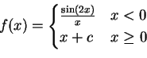
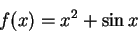
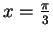
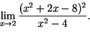
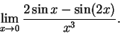
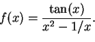
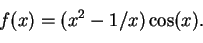

Name: Math 241: Calculus & Analytic Geometry A
Exam 1
4 October 2002
Always the beautiful answer who asks a more beautiful question.
-E. E. Cummings
Instructions: Show all work to receive full or partial credit. All University rules and guidelines for student conduct are applicable.




. Simplify your solution as much as possible.



